Spezies und Herkünfte — Bildtafeln
Eine Bildtafel je Spezies oder sichtbar eigener Herkunft, sortiert nach der Lifepath-Tabelle: erst die menschlichen Herkünfte, dann die übrigen Spezies. Je Tafel ein paar Sätze, die Größe und die Heimatwelt.
Größen und Heimatwelten stammen aus den Quellenbüchern. Wo ein Buch keine Angabe macht, steht das dabei. Was nur für die Tafel festgelegt wurde, ist als Festlegung markiert.
Menschheit
Murrissi
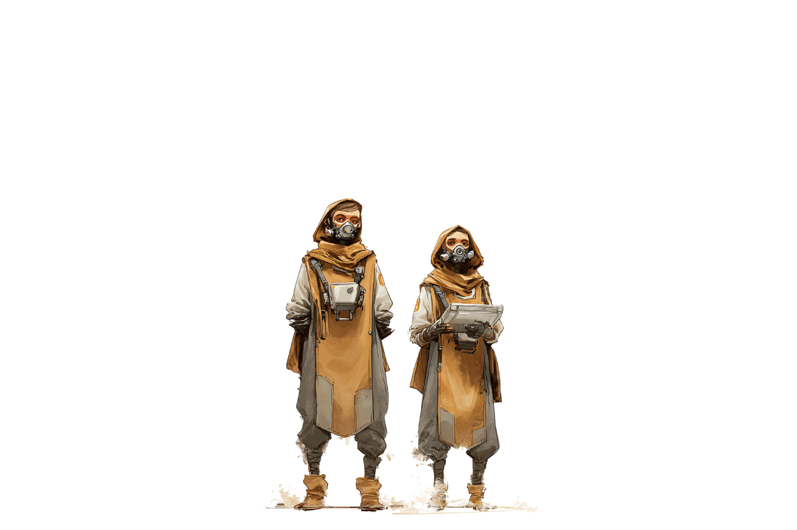
Kleine, sehr blasse Menschen mit großen dunklen Augen, fast haarlos, angepasst an die dichte Atmosphäre ihrer Heimat. Bei Normaldruck tun sie sich spürbar schwer. Sie gelten als klug, neugierig und friedlich und dienen den Redsails-Aslan als Berater und Fachleute; unterwegs tragen sie oft lange Kapuzenroben mit Atemmaske.
Größe: unter 1,2 m · Heimat: Atuakhtea (Aslan-Hierat)
Quelle: The Aslan Hierate, Kap. 13
Solomani
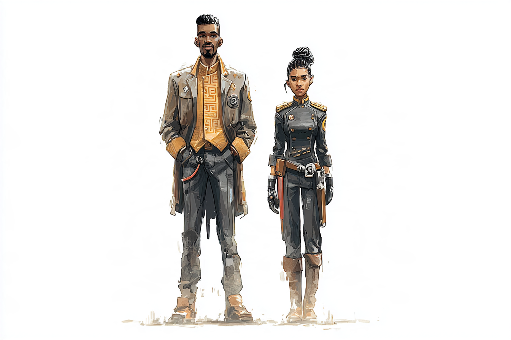
Menschen der Solomani-Konföderation. Äußerlich unterscheiden sie sich nicht von anderen Menschen, nur ein Gentest zeigt den Unterschied. Ihre Welten pflegen die Gründerkulturen der Alten Erde und bauen traditionelle Kleidungsstücke in moderne Mode ein; ihr Zeichen ist das Solomani-Kreuz, ein Kreuz im Kreis.
Größe: menschlicher Durchschnitt · Heimat: Terra
Quelle: Aliens of Charted Space 2
Zhodani
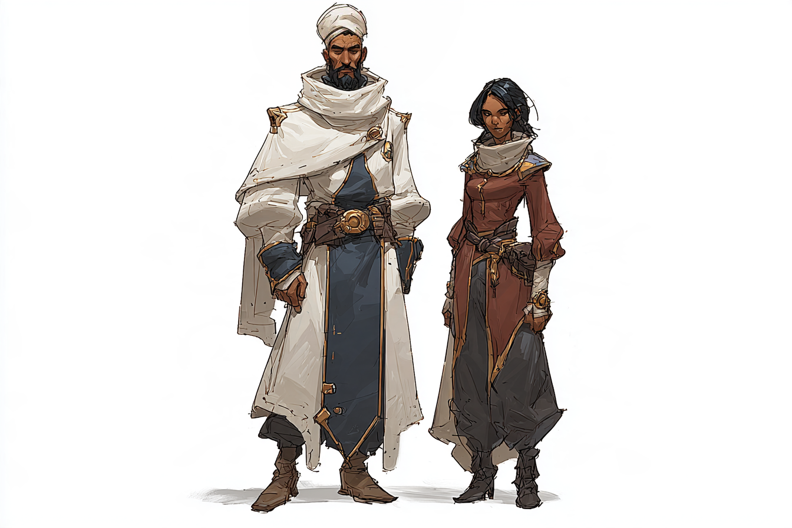
Groß und schlank, meist mit dunklem Teint und schwarzem oder braunem Haar. Das Zhodani-Konsulat ist eine psionische Gesellschaft aus Adligen, Intendanten und Proles. Adlige tragen Turban und Umhang, Intendanten Stirnbänder, alle anderen bequeme Hosen und Tuniken.
Größe: fast 2 m, etwa 90 kg · Heimat: Zhdant
Quelle: Aliens of Charted Space 1
Asim
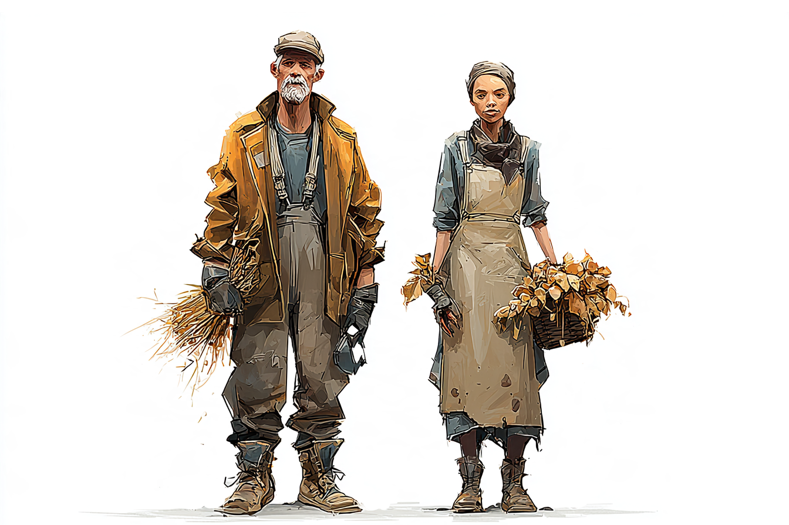
Bauern der einzigen Vasallenwelt von Drinax, einer kargen Agrarwelt auf Tech-Stufe 6. Selbst die Pflanzen sind dort braun. Früher zahlten die Asimi ihren Zehnten an die Foundation, heute an die Getreideschiffe aus Drinax. Die Kleidung beschreibt das Buch nicht; die auf der Tafel ist eine Festlegung.
Größe: menschlicher Durchschnitt · Heimat: Asim (Tlaiowaha-Subsektor)
Quelle: Pirates of Drinax – The Trojan Reach
Drinax-Ödland (Vespexer)
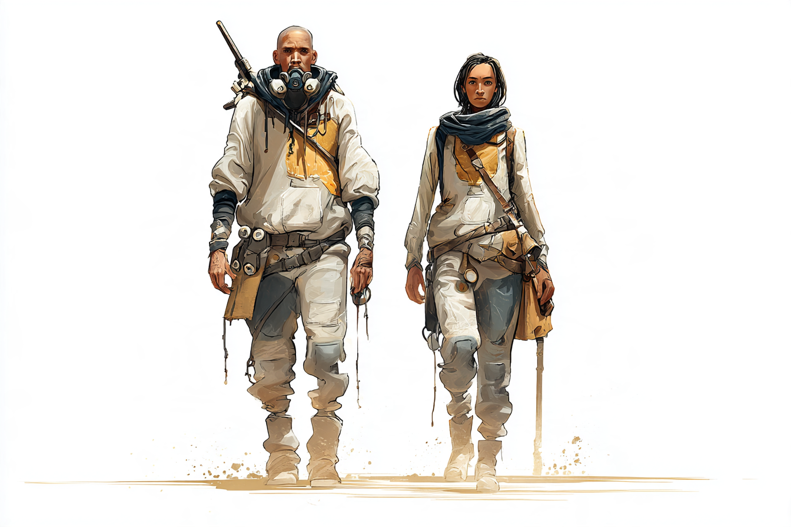
Menschenstämme auf der verwüsteten Oberfläche von Drinax: Nachfahren von Überlebenden und Verbannte aus dem Schwebenden Palast. Sie sind zäh, leben von Jagen und Sammeln und von ein paar Höfen in geschützten Tälern. Gegen die Gefahren der Oberfläche tragen sie Schutzanzüge aus den Werkstätten des Palasts.
Größe: menschlicher Durchschnitt · Heimat: Drinax (Oberfläche)
Quelle: Pirates of Drinax – The Trojan Reach, Kap. 8
Menschheit – Standard
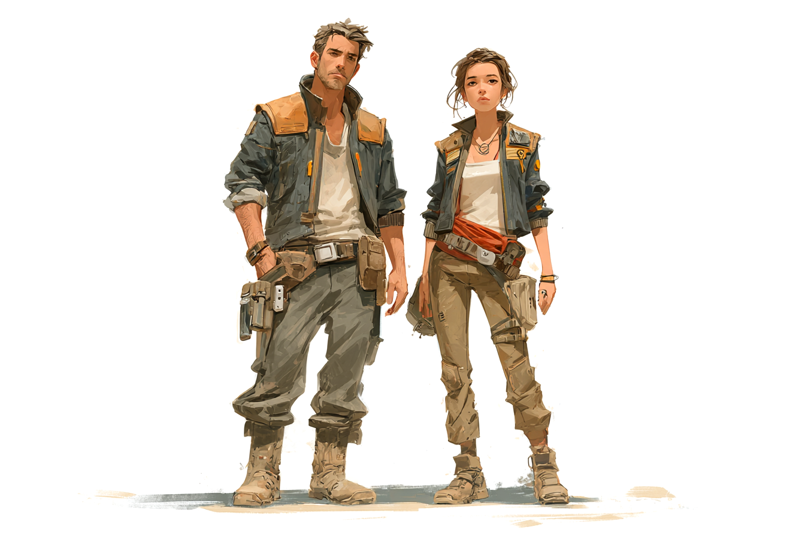
Raumfahrer der Trojanischen Weite ohne besondere Herkunftsmerkmale. Die Tafel ist bewusst neutral gehalten und dient zugleich als Stilvorlage für alle anderen.
Größe: menschlicher Durchschnitt · Heimat: viele Welten
Quelle: Festlegung
Drittes Imperium
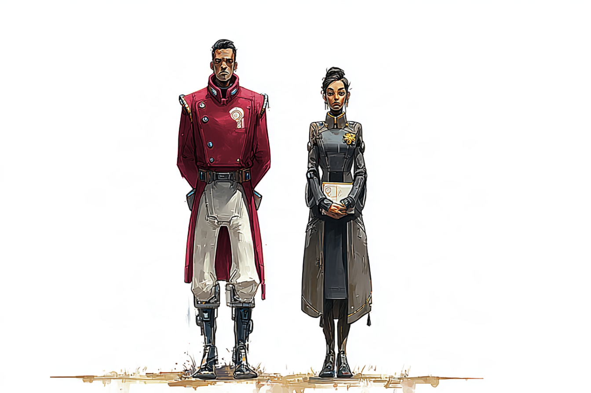
Bürger des größten Sternenreichs im bekannten Raum. Mode und Sitten unterscheiden sich von Welt zu Welt; überall verbreitet sind aber die Stile von Militär und Adel. Die meisten Bürger sind Vilani, Solomani oder eine Mischung aus beiden. Die Imperialen Marines erkennt man an ihrer Ausgehuniform: weinroter Waffenrock, weiße Hosen, schwarze Stiefel.
Größe: menschlicher Durchschnitt · Heimat: viele Welten; Hauptstadt ist Capital
Quelle: The Third Imperium
Schwebender Palast
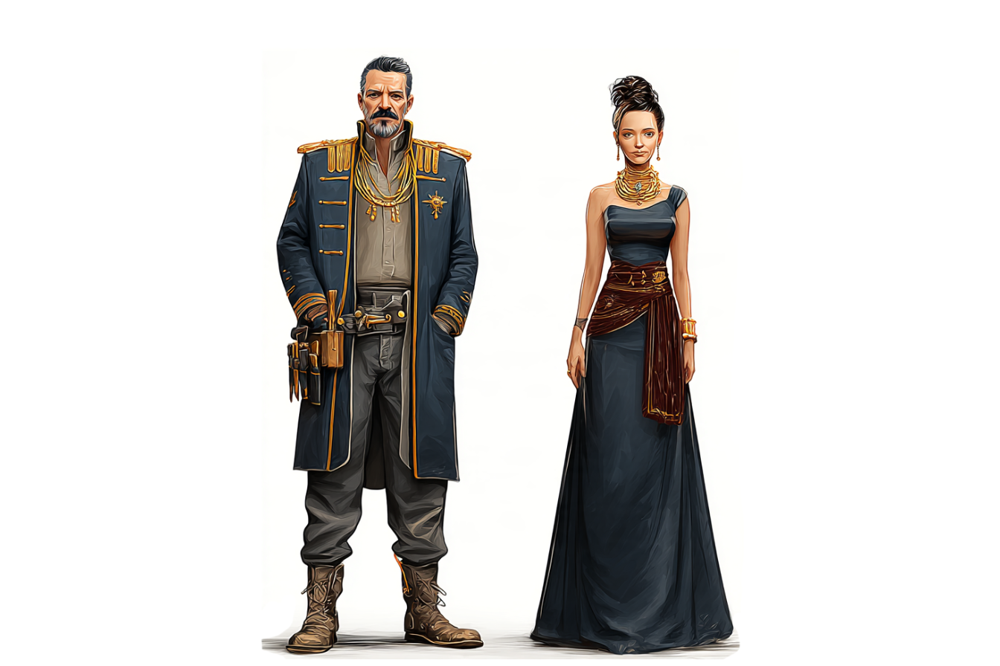
Rund 40.000 Menschen leben in der fliegenden Stadt über Drinax, und jeder von ihnen trägt mindestens einen Adelstitel, auch der Klempner und der Hydroponik-Bauer. Ballkleider, gestärkte Uniformen und Schmuck gibt es reichlich, Vakuumanzüge und Overalls kaum. Man lebt beengt zwischen unschätzbaren Kunstwerken.
Größe: menschlicher Durchschnitt · Heimat: Schwebender Palast, Drinax
Quelle: Pirates of Drinax – The Trojan Reach
Floriani
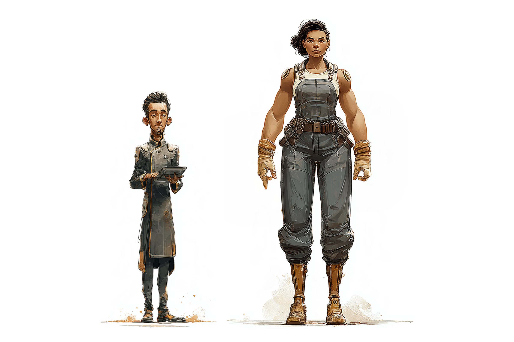
Eine menschliche Nebenrasse, vor Jahrtausenden von Terra verpflanzt und in zwei Formen gezüchtet. Die Feskal sind für Kraft und Ausdauer gebaut, die Barnai sind körperlich schwach, haben einen großen Kopf und hohe Intelligenz und arbeiten als Aufseher und Laborassistenten. Ein Barnai wird stets von Feskal-Dienern begleitet.
Größe: Feskal über 2 m; Barnai ohne Angabe (auf der Tafel 1,65 m, Festlegung) · Heimat: Floria (Florianische Liga)
Quelle: Pirates of Drinax – The Trojan Reach, Kap. 8
Schwertwelten
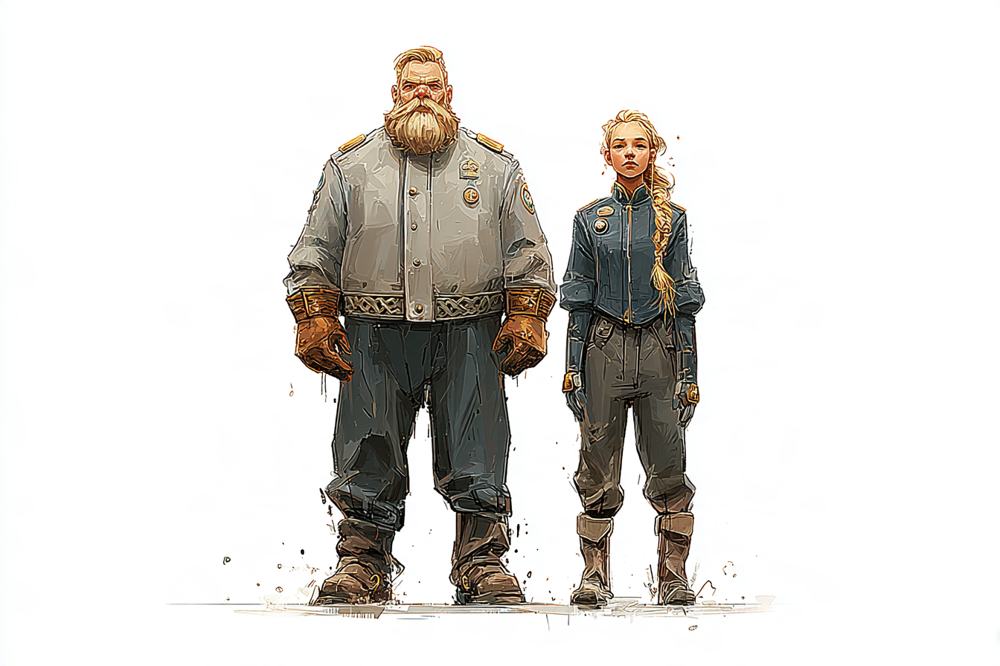
Nachfahren von Terranern mit skandinavisch-germanischem Erbe, stolz und auf Ehre bedacht. Ihre Welten gingen aus Gram und dessen Kolonien hervor. Zu festlichen Anlässen sieht man Uniformen und Ballkleider mit Federbüschen, Epauletten und Orden.
Größe: menschlicher Durchschnitt · Heimat: Subsektor Schwertwelten, Ursprungswelt Gram
Quelle: Sword Worlds
Darrianer
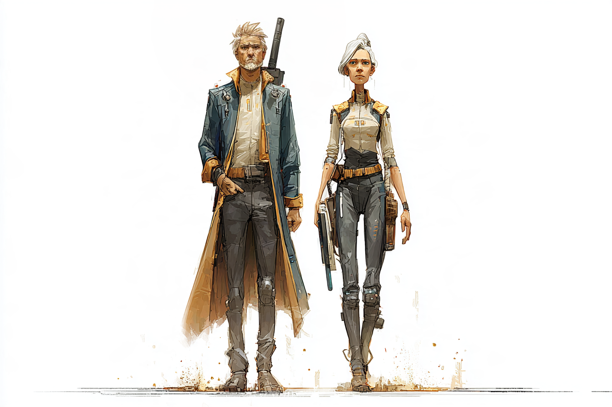
Die Darrianer wirken „elfenhaft“: groß und schlank, mit goldener, leicht reflektierender Haut und weißem oder silbergrauem Haar. Sie sind geschickter, aber etwas schwächer als andere Menschen. Ihre forschende, technikstarke Kultur wurde von der Maghiz schwer getroffen, einer Katastrophe durch Sonneneruptionen.
Größe: groß, keine Zahl im Buch · Heimat: Darrian (Darrianischer Subsektor)
Quelle: Behind the Claw
Geonee (Kolonien)
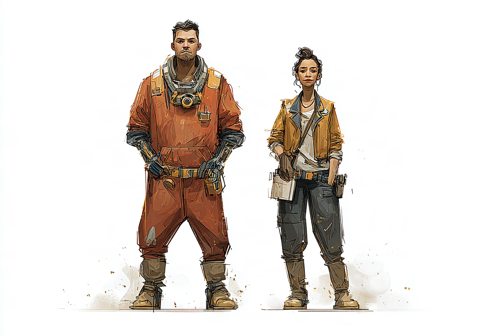
Eine an hohe Schwerkraft angepasste menschliche Nebenrasse: kurz, breit und sehr muskulös. Bekannt sind sie als Ingenieure, Techniker und Händler. Auf den Grenzwelten haben sie viele alte Traditionen abgelegt; Frauen leben dort unabhängig.
Größe: 1,50 m, 75 kg, Männer und Frauen gleich · Heimat: Shiwonee (Massilia); Kolonien weit darüber hinaus
Quelle: Aliens of Charted Space 3; The Third Imperium
Geonee (Shiwonee)
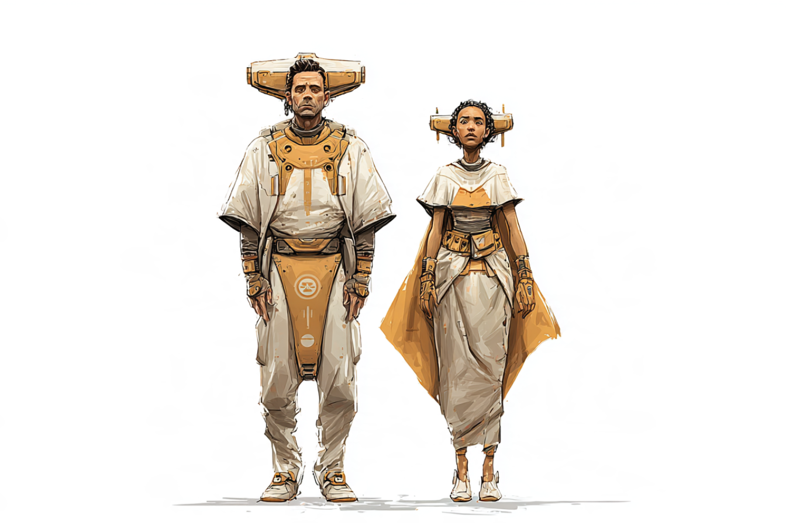
Geonee der Kernwelten Shiwonee und Lagna, wo die alten Traditionen noch gelten: streng patriarchal, Frauen stehen unter dem Schutz eines männlichen Verwandten. Barhäuptig gesehen zu werden ist tabu. Männer tragen in der Öffentlichkeit einen helmartigen Hut, dessen Höhe ihren Rang zeigt; Frauen sind dort laut Buch ganz verhüllt (die Tafel zeigt die Tracht frei).
Größe: 1,50 m, 75 kg · Heimat: Shiwonee (Massilia)
Quelle: Aliens of Charted Space 3
Aslan
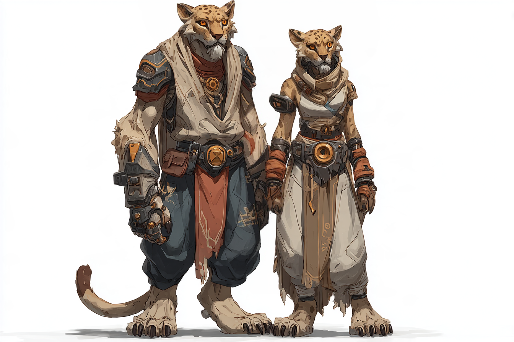
Aufrechte Zweibeiner von Raubtierabstammung mit drei Fingern, Daumen und einziehbaren Krallen, dazu die Dewclaw unter dem Daumen. Männchen sind größer und tragen eine Mähne, Weibchen nicht. Aslan lieben Schmuck; Wertvolles wird graviert, vergoldet oder mit Juwelen besetzt.
Größe: etwa 2 m, 100 kg · Heimat: Kusyu
Quelle: Aliens of Charted Space 1
Weitere Spezies
Vargr
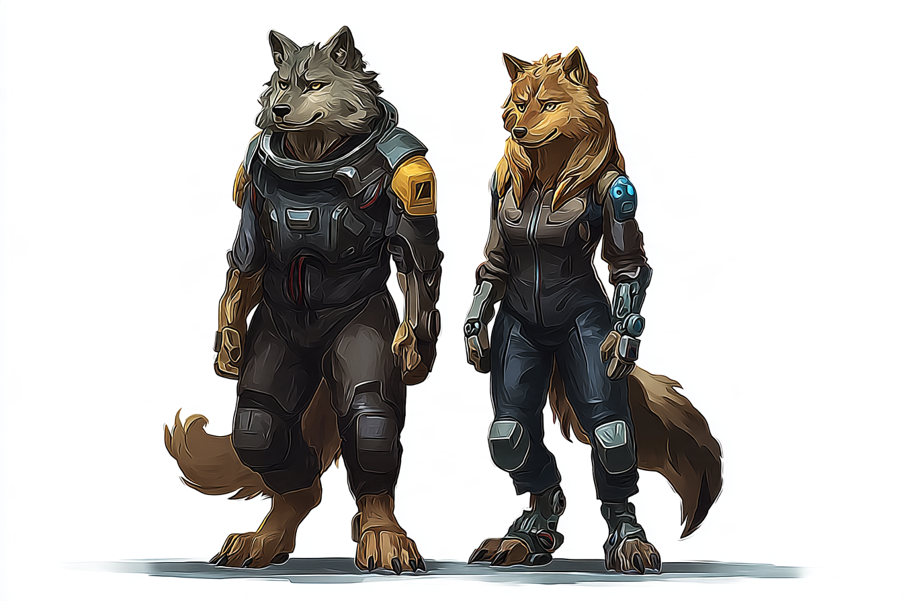
Von den Ancients aus Hunden gezüchtet: Fell, Schnauze und Schwanz, auf den Zehen gehend und oft leicht gebeugt. Ihre Kleidung ist eng, praktisch und für Menschenaugen oft grell; die meisten gehen barfuß.
Größe: Männer 1,6 m und 60 kg, Frauen 1,5 m und 55 kg · Heimat: Lair (Sektor Provence)
Quelle: Aliens of Charted Space 1
Delfine
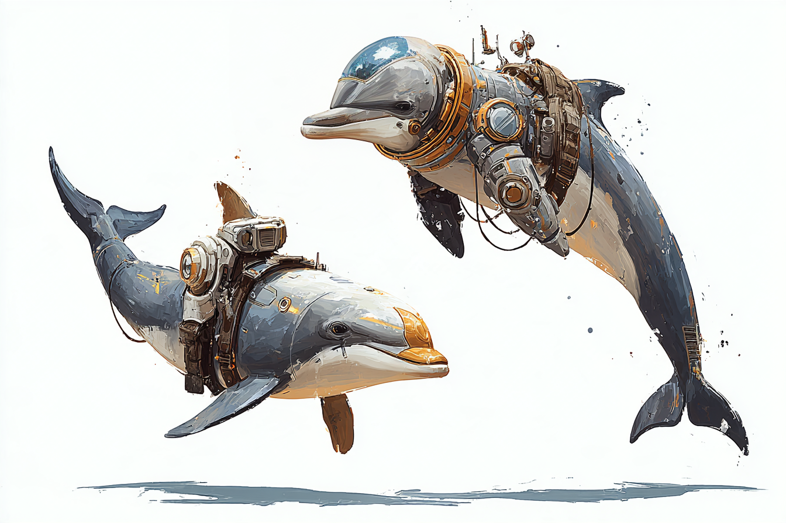
Von GeneAssist zur Intelligenz gehoben, mit zwei kleinen Greiffingern an den Vorderflossen und einem Kehlkopf, der menschliche Sprache erlaubt. An Land reisen sie in einem Schutzanzug mit Antigrav und feuchter Atmosphäre, oft mit zwei Roboterarmen („Waldos“).
Größe: Großer Tümmler 2,75–4 m lang; Weißseiten-Delfin 2,1–2,4 m · Heimat: Terra; heute im Imperium und in der Konföderation verbreitet
Quelle: Aliens of Charted Space 3
Droyne
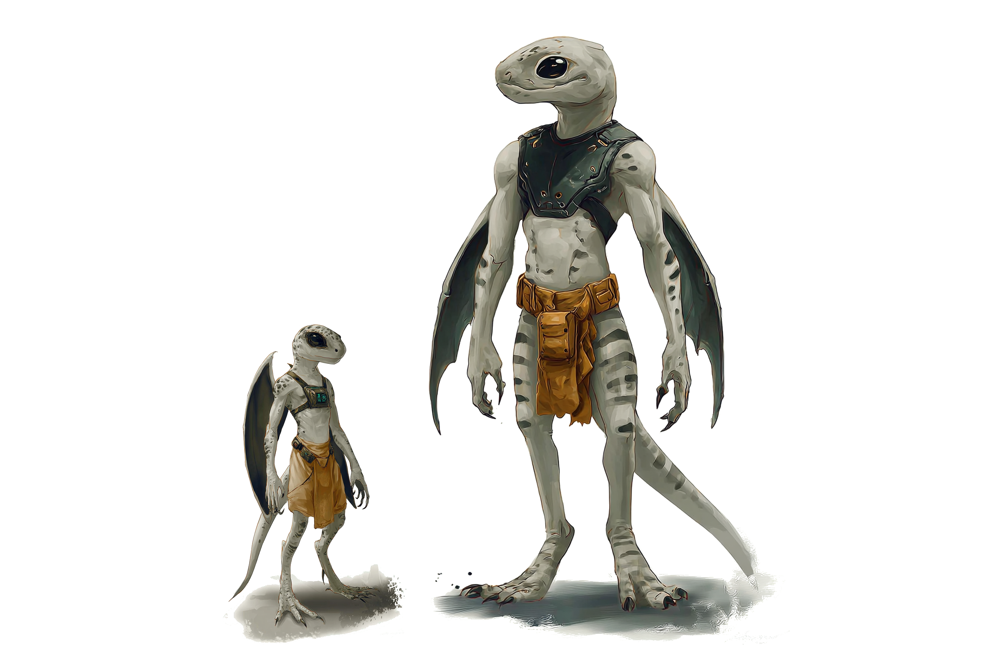
Klein und zart, mit grauer Haut und schwarzen Zeichnungen, großen Facettenaugen und Flügeln. Jeder Droyne gehört einer Kaste an, die auch den Körper prägt. Als Reisende trifft man fast nur „Sports“, Gesandte und Kundschafter; die Tafel zeigt einen Sport und einen Krieger. Ein Oytrip ist keine Welt, sondern eine Droyne-Gemeinschaft.
Größe: 1–2 m je nach Kaste, meist um 1 m · Heimat: unbekannt; die Droyne nennen sie Eskayloyt, „verlorene Heimat“
Quelle: Aliens of Charted Space 2
Bwaps
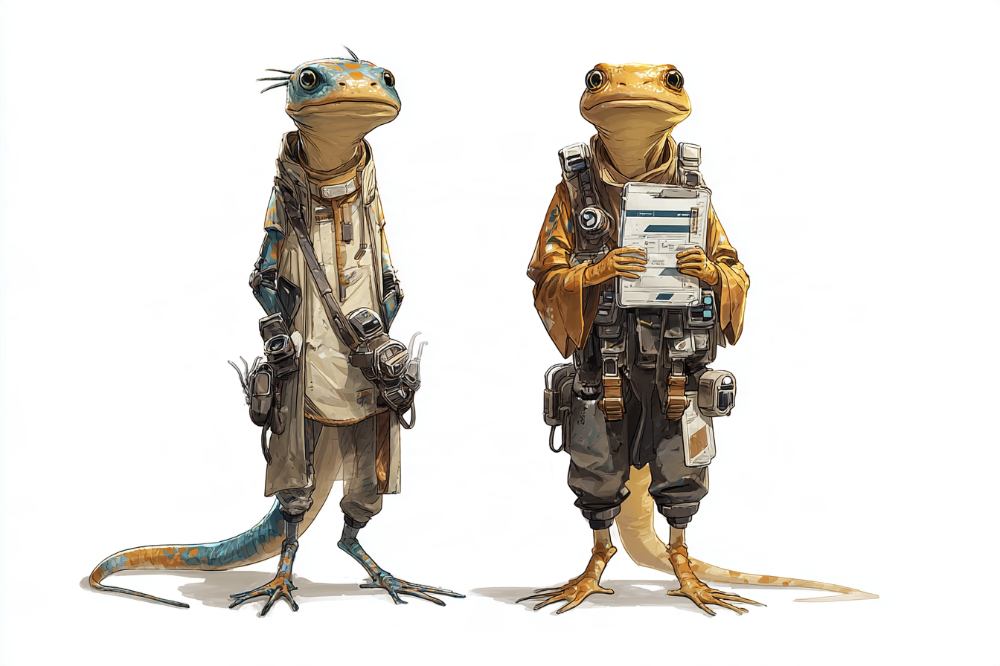
Amphibische Zweibeiner mit langem, flachem Schwanz und Haut, die ständig feucht bleiben muss. Unterwegs tragen sie einen weiten Kapuzenüberwurf mit eingenähten Wasserschläuchen, außen bemalt mit dem eigenen Hautmuster. Sie sind die sprichwörtlichen Bürokraten des Imperiums.
Größe: 1,2–1,5 m, 34–68 kg · Heimat: Marhaban
Quelle: Aliens of Charted Space 3
K’kree
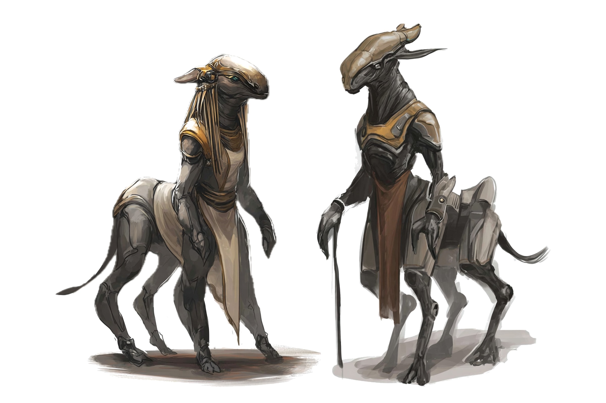
„Zentauren“: ein vierbeiniger Körper mit aufrechtem Oberkörper und zwei Armen, dichtes graues oder schwarzes Fell. Sie sind Pflanzenfresser, leben in Herden und meiden enge Räume. Gespielt wird der Patriarch mit seiner Familie; die Tafel zeigt einen Patriarchen und eine Frau.
Größe: 2–2,4 m, etwa 550 kg · Heimat: Kirur
Quelle: Aliens of Charted Space 1
Addaxur
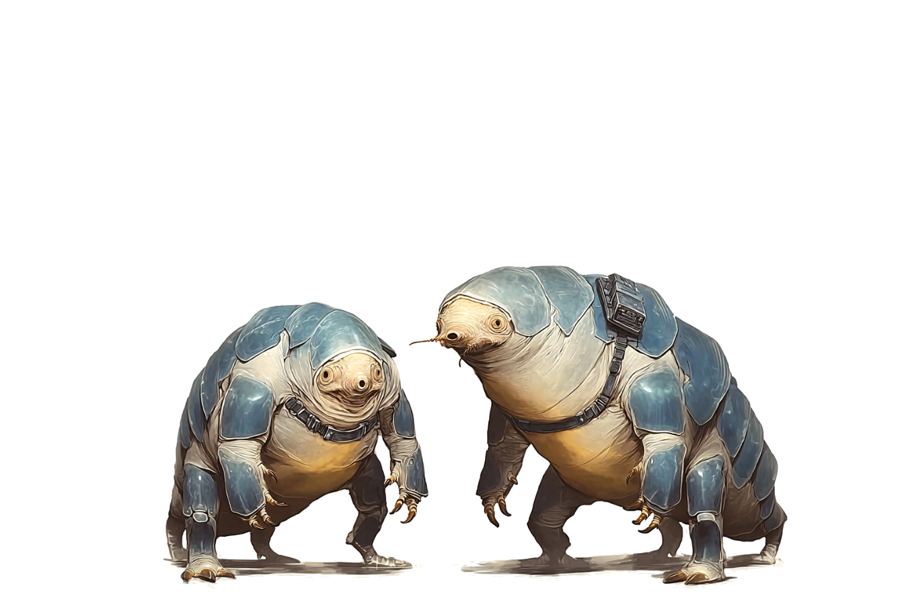
Sie sehen aus wie riesige Bärtierchen: sechs Beine, kein Kopf, und die Füße dienen auch als Hände. Nach den Menschen sind sie die häufigste Spezies im Zhodani-Konsulat und oft Besatzung der Konsularflotte. Sie sprechen mit Flüstern und Klicklauten.
Größe: etwa 60 cm auf sechs Beinen, aufgerichtet bis 140 cm · Heimat: eine Welt mit hoher Schwerkraft, Lage in den Quellen widersprüchlich
Quelle: Addaxur
Z’kr
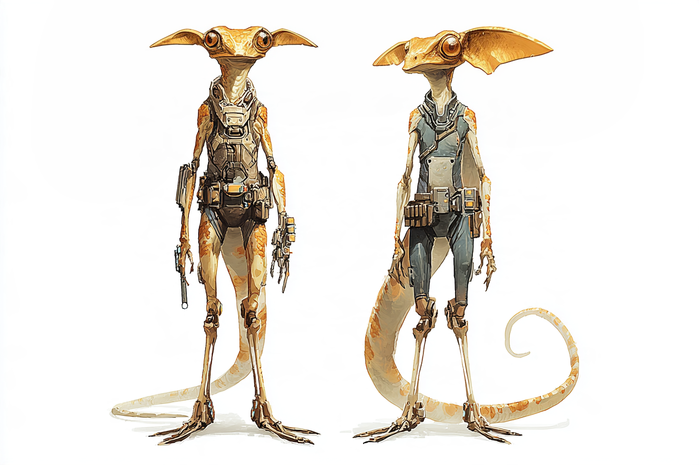
Wechselwarme, eierlegende Reptilienwesen mit silbrigen Schuppen, großen bernsteinfarbenen Augen und langen spitzen Ohren, die mit ihrer Stimmung zucken. Seit Jahrhunderten warten sie die Schiffe von Aslan-Clans. Weil sie jedes Gerät zerlegen und umbauen, nennen Terraner sie „Gremlins“.
Größe: knapp 1,5 m · Heimat: O’ye
Quelle: The Aslan Hierate, Kap. 26
Llyrnians
Die Tafel liegt nur beim SL und wird am Spieltisch gezeigt.
Tunnelbewohner mit zylindrischem, dreiseitig symmetrischem Körper: unten drei Beine, oben drei Arme mit Klauen, die zugleich hören. Ein Sehband ringsum lässt sie im Infrarot sehen, ein Panzer aus organischen Silikaten schützt sie. Es gibt drei Geschlechter; traditionell dienen Llyrnians als Sicherheitstruppen auf Geonee-Schiffen.
Größe: etwa 1,67 m lang, 63,5 kg (Graber und Krieger) · Heimat: Llyrn, ein kalter Mond eines Gasriesen (Massilia)
Quelle: Aliens of Charted Space 3
Yont
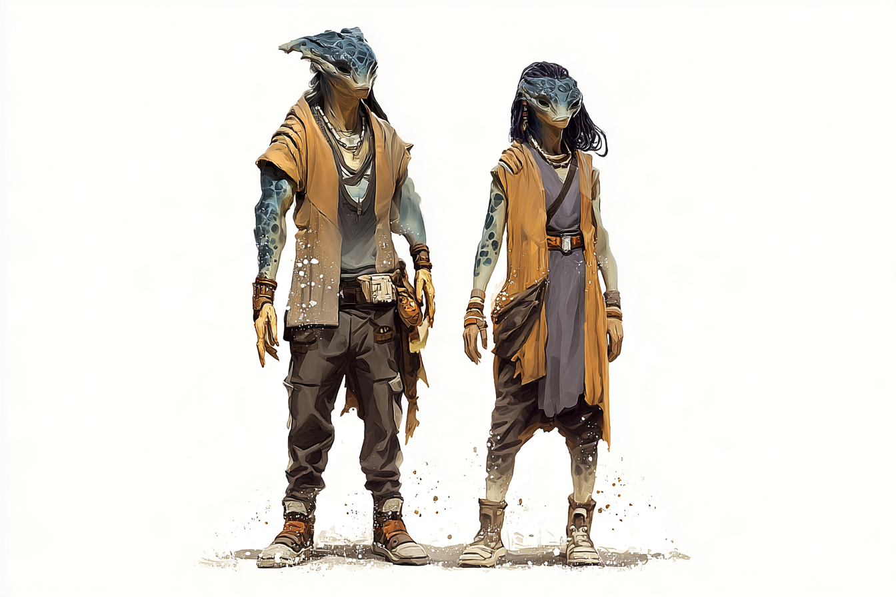
Geschuppte Humanoide auf Tech-Stufe 2, die in Stämmen leben. Sie halten die Aslan für Himmelsgötter. Wer seine Welt verlässt, tut das meist als Herumtreiber.
Größe: im Buch keine Angabe · Heimat: Awaweaw
Quelle: Pirates of Drinax – The Trojan Reach, Kap. 22
Orcas
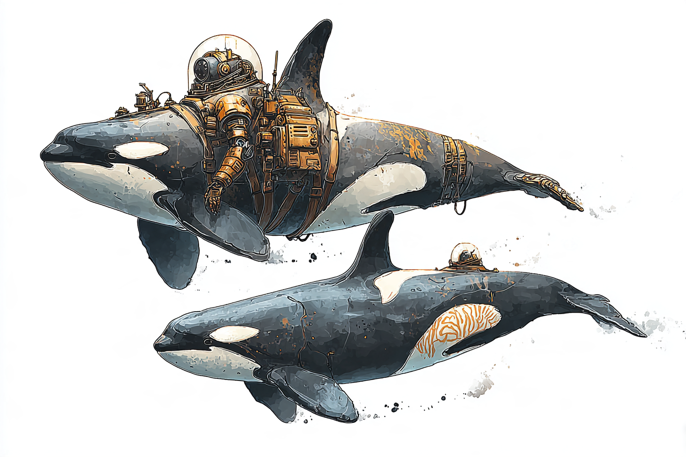
Von GeneAssist nur widerwillig zur Intelligenz gehoben. Ihre Gesellschaft ist streng matriarchal; Ritualnarben erzählen von Tapferkeit und großen Jagden. Wegen ihrer Größe kommen sie kaum über ihre Heimat hinaus.
Größe: im Buch keine Angabe · Heimat: Sufren (Diaspora-Sektor)
Quelle: Aliens of Charted Space 3
Chokari
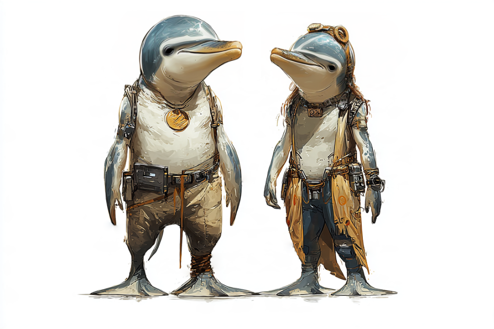
Humanoide, die die Ancients aus denselben Delfinen gezüchtet haben wie die Foelen-Delfine, an das Leben unter Wasser angepasst und an Land trotzdem zu Hause. Sie sprechen mit Klicklauten und sind psionisch begabt. Seit 852 halten die Zhodani ihre Welt besetzt.
Größe: im Buch keine Angabe · Heimat: Foelen
Quelle: Behind the Claw